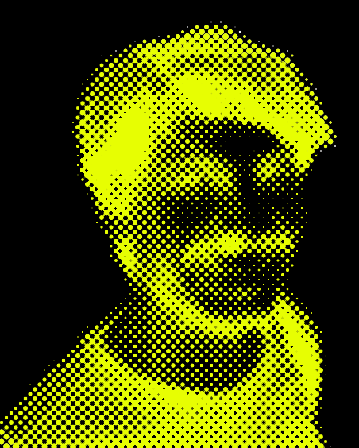

intersecció entre art, arquitectura,
tecnologia i sistemes territorials.
per a col·laboracions, encàrrecs
o consultes:
— / sobre mi

Arquitecte i urbanista format a la Universitat Politècnica de Catalunya (ETSAV-UPC), màster en Hàbitat i Pobresa Urbana a l'Amèrica Llatina (FADU-UBA, tesi pendent), amb formació de postgrau en anàlisi de dades, polítiques públiques i ciència de dades. Compta amb més de deu anys d'experiència en assentaments informals, planificació territorial i integració sòcio-urbana a l'àrea metropolitana de Buenos Aires i a l'Amèrica Llatina, tant des del sector públic com en col·laboració amb organitzacions de base i cooperatives. La seva tasca s'ha centrat en la millora d'assentaments informals, la infraestructura urbana i ambiental i l'anàlisis geoespacial com a eina per a la planificació i la presa de decisions.
↓ descarregar cv